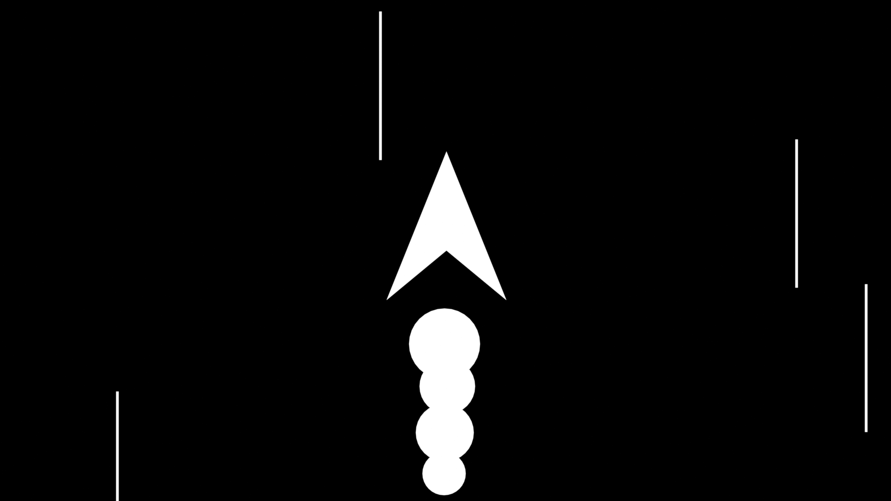
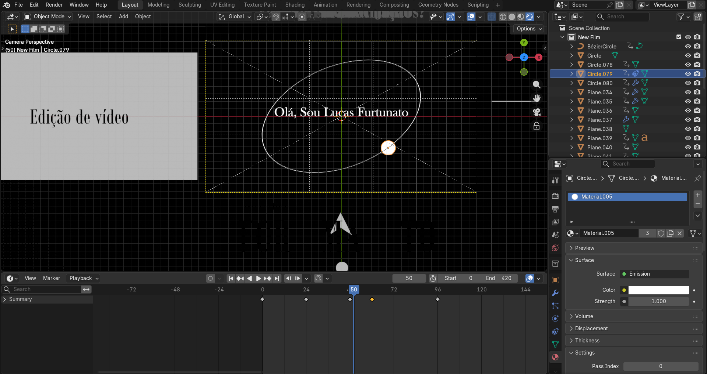
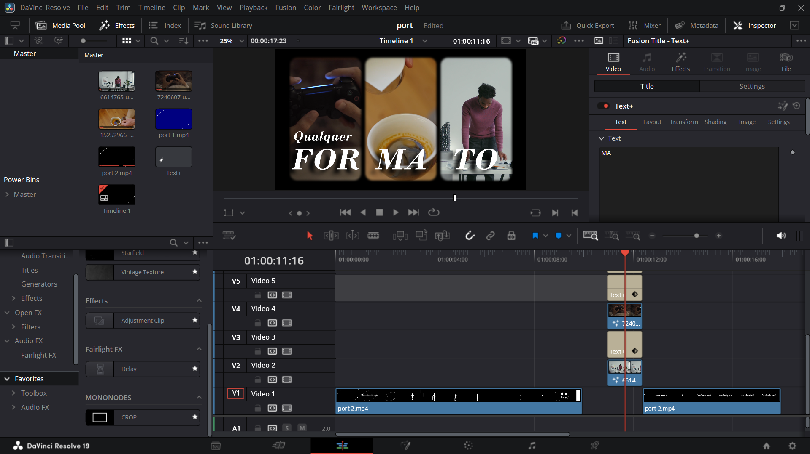

Intro
Este vídeo de apresentação utiliza o universo e o espaço como fio condutor de uma curta narrativa visual. As imagens organizam o ritmo da edição e as transições do motion design, dando coesão à sequência.
Storyboard

Workflow


Créditos
Short Videos: pexels
Creative and Art Direction + Storyboard + Motion Direction and Motion Design: Made by Lucas Furtunato
lucasfurtunato.contato@gmail.com